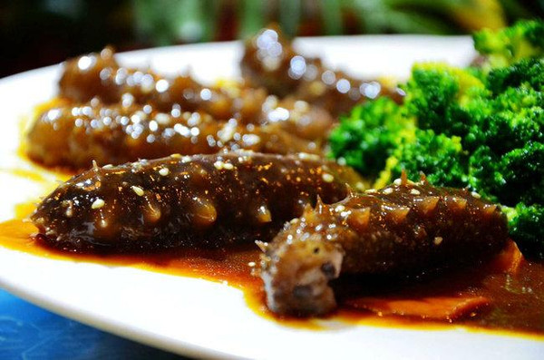
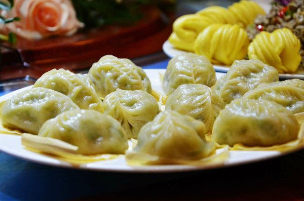

中国的烹饪博大精深，在从北到南绵长的海岸线上，在每个滨海城市里，都能找到用当地方式烹制的海鲜菜肴。北方粗犷的垮炖，南方精致的忠于原味，都赋予了海鲜最鲜美的滋味。山东在我印象中擅长烹饪各种小海鲜，酱爆、辣炒、凉拌、做馅，不用那些名贵咋舌的海产原料，只用各种家常做法将小海鲜们做的活色生香，美味无敌。
威海，中国山东省地级市，位于山东半岛东端，北、东、南三面濒临黄海，北与辽东半岛相对，东与朝鲜半岛隔海相望，西与山东烟台接壤。东西最大横距135公里，南北最大纵距81公里，总面积5797平方公里，其中市区面积777平方公里。海岸线长985.9公里。辖环翠区、文登区、荣成市、乳山市。
